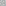
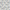

SubstitutionTilingGrid
| Quick facts | |
|---|---|
| Grid | SubstitutionTilingGrid |
| CellType | NGonCellType* |
| CellDir | CellDir* |
| CellRotation | CellRotation* |
| Bound | SubstitutionTilingBound |
| Properties | 2d, Planar, Infinite |
| *NGonCellType represents any polygon. But for 4 and 6 sided faces, the values overlap with SquareCellType and HexCellType, and the corresponding SquareDir, SquareRotation, PTHexDir, HexRotation. | |
SubstitutionTilingGrid implements configurable subtitution tilings, also known as inflation/deflation tilings. This is a common way of creating aperiodic tilings, that is, grids made of cells in a small variety of shapes, but the overall patern of the grid does not repeat.
The substitution tilings are configured via a set of prototiles, which at present are not documented further.
Sylves comes with several built-in substitution tilings.
 |
Domino Grid A grid of dominos (6 sided cells the shape of a rectangle) tiled in an aperiodic pattern. |
|  | Penrose Rhomb Grid Also known as the penrose P3 tiling. |
|  | Chair Grid The Chair Tiling is a simple L shaped aperiod rep-tile. |
{kind=link}
{kind=link}
Cell co-ordinates
The x, y, z values are concatenated to form a 24 byte string that encodes the path to a specific cell. The cells nearest the origin will have y=z=0, which is usually sufficient.